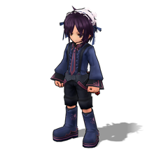
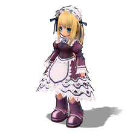
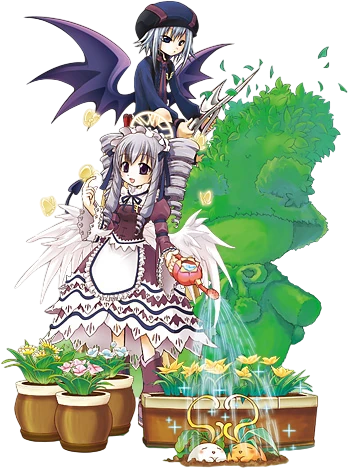
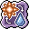

Bad Merchant
Bad Merchant


 Gardener
Gardener Mandra Turnip
Mandra Turnip Gardener
Gardener Gardener Master
Gardener MasterGardener set
Lv 30

Other options
- Alt hat
How to get
- All pieces are sold by a guild NPC in the Gardener Guild's Garden
- Wear the Gardener Brooch to buy
Joint job
A Joint Job that grows plants in pots, builds decorations and changes the weather and sky over your Flying Garden.

Requirement: Job Level 30 or higher in the job you have now.
Talk to the Bad Merchant in Uptown and give him the  Mineral Water. Go through all his dialog. He tells you Elizabeth was stolen and the Flying Garden flew east toward Fareast City.
Mineral Water. Go through all his dialog. He tells you Elizabeth was stolen and the Flying Garden flew east toward Fareast City.
Travel to Fareast City and enter the Fareast Cafe. Talk to the Strange Merchant surrounded by Mandra plants. He tells you Juliet was stolen too.
Leave the cafe and talk to the Commoner in front of it. He saw the Flying Garden fly toward Mai Mai Island.
Travel to Mai Mai Island. Climb the Airship Rope on the beach to board the Gardener Guild's Garden.
Talk to the Gardener Master next to the fountain behind the Gardener Guild. Answer the master's questions.
Go into the Gardener Guild and talk to the Gardener.
Return to Fareast City and ask around for someone who knows plants. Talk to the old man by the trash can past Mother.
On Mai Mai Island, talk to the Mandra Turnip near the shop and choose Follow it. This starts the rescue quest and takes you into Within the Mai Mai Ruins.
At the entrance, the Gardener gives you 30 seeds to throw. Only these seeds hurt the monsters in the ruins. You get more seeds from trees and wooden boxes inside.
Find your way through the maze to the boss and defeat it.
After the boss, leave through the warp within 60 seconds, before the ruins collapse. Otherwise you start the quest again.
Return to the Gardener Guild's Garden and talk to the Gardener Master and the Gardener. You receive the Gardener Brooch. Wear it to become a Gardener.
Gardener skills cost no skill points. You learn each one automatically when you reach its Job Level.
| Lv | SP | Cast time | Cooldown |
|---|---|---|---|
| 1 | 25 | 0.5 sec | 1 sec |
| Lv | Cast time | Cooldown | Area | Seed cost |
|---|---|---|---|---|
| 1 | 2.5 sec | 1 sec | 3x3 around caster | 8 selected seeds |
| Lv | SP | Cast time | Cooldown | Area | Target | Damage |
|---|---|---|---|---|---|---|
| 1 | 6 | 0.5 sec | 1 sec | 3x3 | Plant enemies only | 10 fixed Neutral damage |
| 2 | 6 | 0.5 sec | 1 sec | 3x3 | Plant enemies only | 10 fixed Neutral damage |
| 3 | 6 | 0.5 sec | 1 sec | 3x3 | Plant enemies only | 10 fixed Neutral damage |
| 4 | 6 | 0.5 sec | 1 sec | 3x3 | Plant enemies only | 10 fixed Neutral damage |
| 5 | 6 | 0.5 sec | 1 sec | 3x3 | Plant enemies only | 10 fixed Neutral damage |
 Morg Fuel StoragePassive · Max Lv 1
Morg Fuel StoragePassive · Max Lv 1| Lv | Effect |
|---|---|
| 1 | Unlock/marker passive; no direct combat stat bonus |
Opens the seed creation synthesis interface for this skill level.
| Lv | SP | Cast time | Cooldown |
|---|---|---|---|
| 1 | 3 | 1 sec | 1 sec |
| 2 | 3 | 1 sec | 1 sec |
| 3 | 3 | 1 sec | 1 sec |
| 4 | 3 | 1 sec | 1 sec |
| 5 | 3 | 1 sec | 1 sec |
 Horticulture CraftActive utility skill · Max Lv 3
Horticulture CraftActive utility skill · Max Lv 3Opens horticulture synthesis for gardening goods.
| Lv | SP | Cast time | Cooldown |
|---|---|---|---|
| 1 | 3 | 1 sec | 1 sec |
| 2 | 3 | 1 sec | 1 sec |
| 3 | 3 | 1 sec | 1 sec |
| Lv | SP | Cast time | Cooldown | Max visitors |
|---|---|---|---|---|
| 1 | 5 | 0 sec | 0 sec | 2 |
Garden MeisterPassive · Max Lv 1| Lv | Effect |
|---|---|
| 1 | Unlock/marker passive; no direct combat stat bonus |
TopiaryPassive · Max Lv 1| Lv | Effect |
|---|---|
| 1 | Unlock/marker passive; no direct combat stat bonus |
GardeningPassive · Max Lv 1| Lv | Effect |
|---|---|
| 1 | Unlock/marker passive; no direct combat stat bonus |

Weather ControlActive airship utility · Max Lv 1| Lv | Cast time | Cooldown |
|---|---|---|
| 1 | 1 sec | 1 sec |
| Lv | Cast time | Cooldown |
|---|---|---|
| 1 | 1 sec | 1 sec |
The cast is accepted, but the skill handler action is empty, so it does not currently produce a disassembly result or material reward.
| Lv | SP | Cast time | Cooldown |
|---|---|---|---|
| 1 | 3 | 1 sec | 1 sec |

